บท 04–05 ทดสอบว่าสกิล ใช้ได้ · บทนี้ถามว่าแก้แล้ว ดีขึ้นจริงไหม
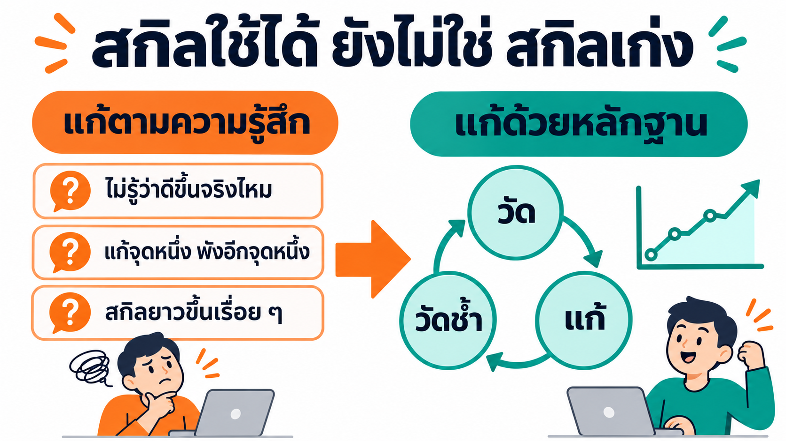
| ทำแบบนี้ | สิ่งที่เกิด |
|---|---|
| ลองโจทย์เดียว เห็นว่าดีขึ้น | รันซ้ำอีกรอบอาจได้ผลต่างเดิม เพราะ AI ตอบไม่เหมือนกันทุกครั้ง |
| เพิ่มกติกาเพื่อแก้โจทย์ที่พลาด | โจทย์นั้นผ่าน แต่โจทย์อื่นที่เคยผ่านอาจพัง |
| เพิ่มกติกาทุกครั้งที่เจอปัญหา | สกิลยาวขึ้น แพงขึ้น โดยไม่รู้ว่ากติกาข้อไหนมีผลจริง |
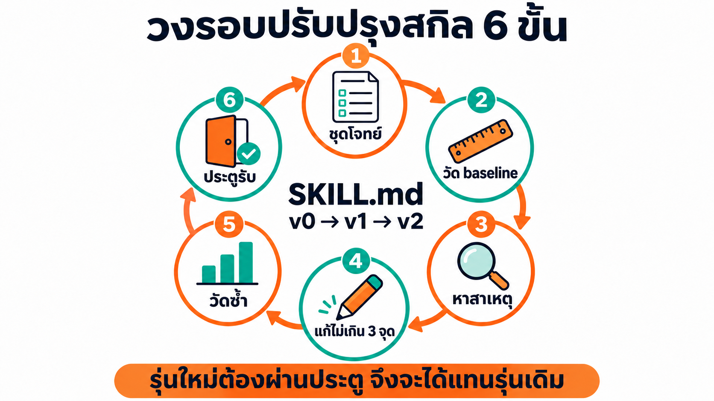
| ขั้น | ทำอะไร | ใช้โทเคน |
|---|---|---|
| 1 · ชุดโจทย์ | เตรียมโจทย์ แบ่ง train / val และเขียนตัวตรวจ | ไม่ใช้ |
| 2 · วัด baseline | รันสกิลรุ่นเดิมกับทุกโจทย์ โจทย์ละหลายรอบ | ใช้ |
| 3 · หาสาเหตุ | อ่านข้อที่พลาดและร่องรอยการทำงานของชุด train | ไม่ใช้ |
| 4 · แก้ | สร้างรุ่นใหม่ แก้ไม่เกิน 3 จุด | ไม่ใช้ |
| 5 · วัดซ้ำ | รันรุ่นใหม่ด้วยเงื่อนไขเดียวกับ baseline ทุกค่า | ใช้ |
| 6 · ประตูรับ | เทียบสองรุ่น รับหรือไม่รับ แล้ววนกลับไปขั้น 3 | ไม่ใช้ |
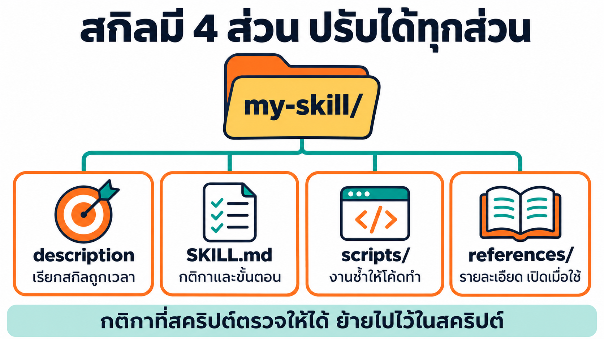
description ให้ AI เรียกสกิลถูกเวลาSKILL.md กติกาและขั้นตอนscripts/ งานที่ตรวจได้ด้วยโค้ดreferences/ รายละเอียดที่เปิดเมื่อใช้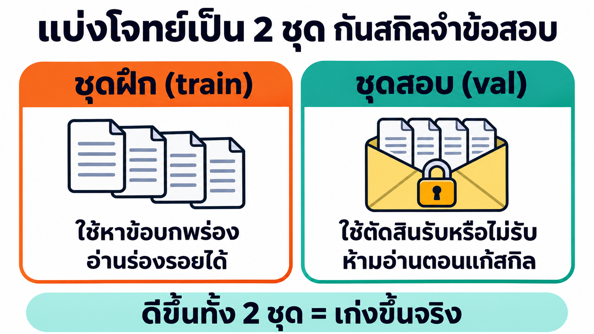
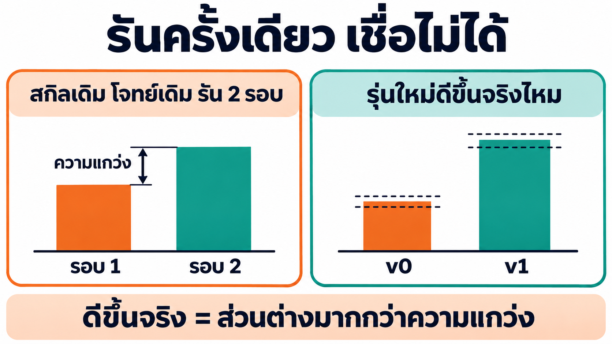
null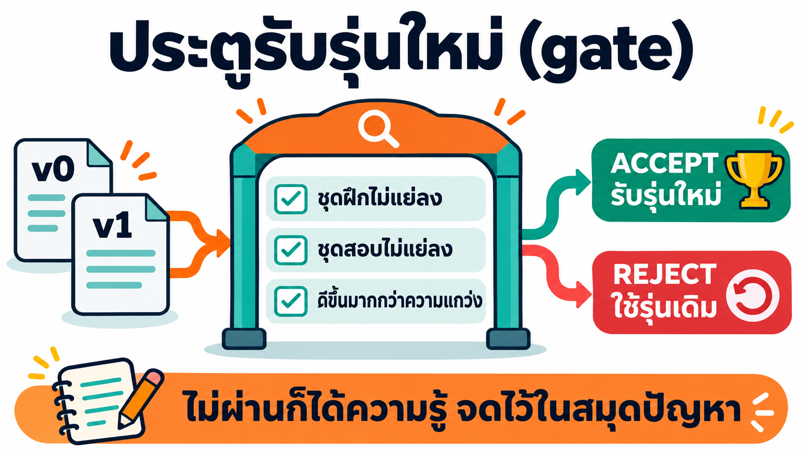
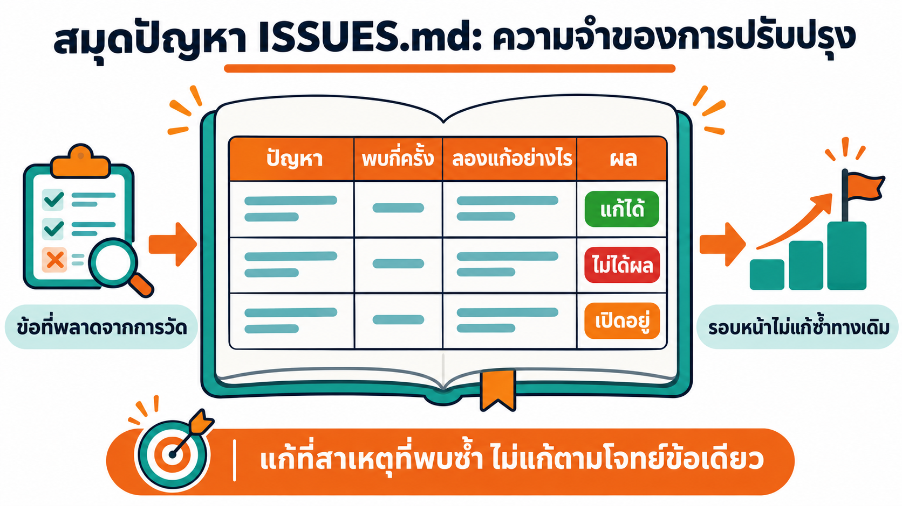
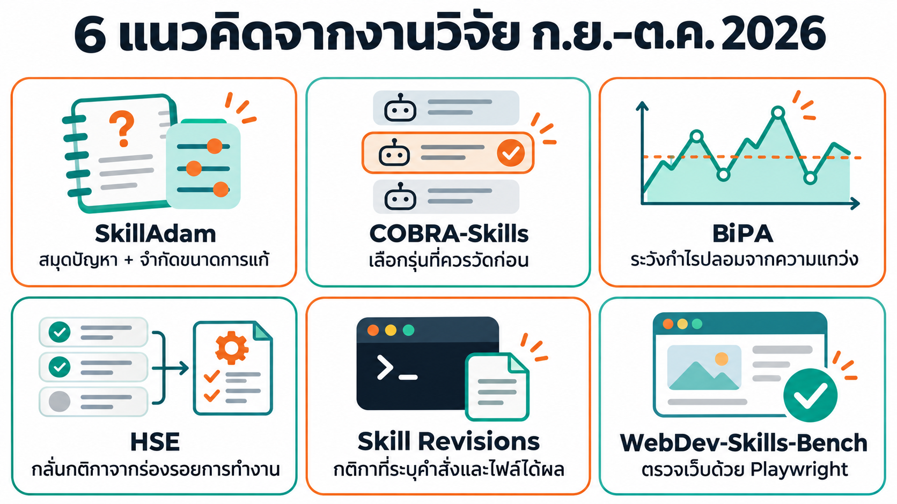
| งาน | วันที่ | แนวคิดหลัก | ใช้ในบทนี้ |
|---|---|---|---|
| SkillAdam | 8 ก.ย. | issue tracker จำข้อผิดพลาดและทางแก้ที่ลองแล้ว · จำกัดขนาดการแก้ | ISSUES.md · แก้ไม่เกิน 3 จุด |
| COBRA-Skills | 10 ก.ย. | งบวัดผลจำกัด ใช้ bandit เลือกรุ่นที่ควรวัดเต็มชุด | วัดเฉพาะรุ่นที่มีเหตุผล (ไม่ได้ทำ bandit) |
| BiPA | 27 ต.ค. | กำไรบนชุดเล็กหายเมื่อวัดกับชุดทดสอบ · ต้นทุนมาจากจำนวนรอบมากกว่าความยาวสกิล | null · ประตูเทียบความแกว่ง · นับคำสั่ง |
| HSE | 26 ต.ค. | กลั่นสกิลจากร่องรอย แก้ไม่เกิน 3 กติกา ตรวจกับงานที่กันไว้ | อ่าน transcript ก่อนแก้ · ชุด val |
| งาน | วันที่ | แนวคิดหลัก | ใช้ในบทนี้ |
|---|---|---|---|
| Agent Skill Evolution | 4 ต.ค. | กติกาที่ได้ผลมักระบุคำสั่งหรือ path ที่รุ่นก่อนไม่เคยพูดถึง | กติกาใหม่ระบุค่าที่ตรวจได้ เช่น "เกิน 60%" |
| SkillScriptBench | 2 ต.ค. | แก้ทั้ง SKILL.md และสคริปต์ โดยไม่ทำของเดิมพัง | แก้สคริปต์ด้วย · ดูข้อตรวจเดิมทุกข้อ |
| SWE-Skills-Bench (ฉบับ 2) | 27 ต.ค. | สกิล 92 จาก 98 ตัวไม่ทำให้ผลต่างอย่างมีนัยสำคัญ | แขน "ไม่มีสกิล" |
| WebDev-Skills-Bench | 24 ส.ค. | วัดสกิลงานเว็บด้วยชุดทดสอบ Playwright | ตัวตรวจเว็บของส่วนที่ 2 |
| claude plugin eval | ก.ย. | รันโจทย์ละ 3 รอบ เทียบกับแขนที่ไม่มีปลั๊กอิน | มีสกิล เทียบ ไม่มีสกิล |
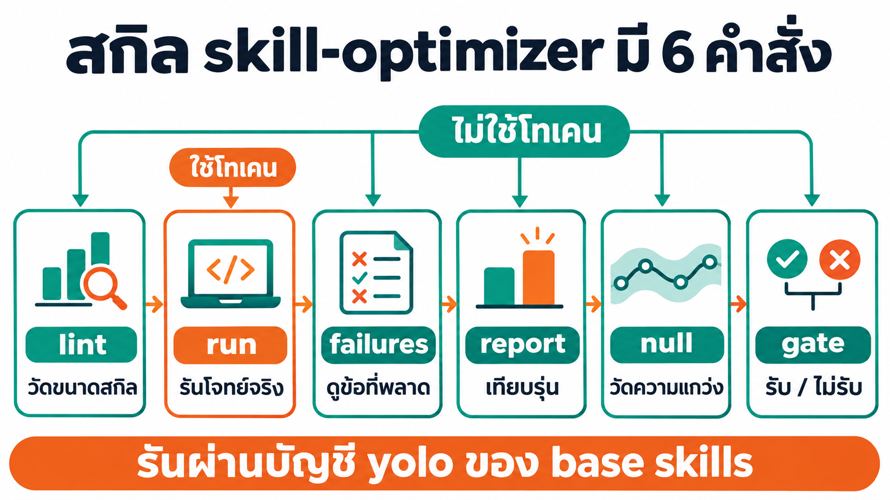
skillopt.py| คำสั่ง | ทำอะไร | ผลที่ได้ |
|---|---|---|
lint | วัดขนาดของสกิล | บรรทัดและไบต์ของ SKILL.md · ลิงก์ที่เสีย |
run | รันสกิลกับทุกโจทย์ รอบละ sandbox ใหม่ (ใช้โทเคน) | ผลงาน ร่องรอย ตัวชี้วัด คะแนน |
failures | แสดงข้อที่พลาด | ข้อตรวจที่ไม่ผ่าน + path ของร่องรอย |
report | เทียบรุ่น | ตาราง + results.json |
null | วัดความแกว่ง | ต่อโจทย์ และของค่าเฉลี่ย |
gate | ตัดสิน | ACCEPT / REJECT พร้อมเหตุผล |
grade | ตรวจผลงานเดิมซ้ำหลังแก้ตัวตรวจ | คะแนนใหม่ ไม่ต้องรันโจทย์ |
| ขั้น | ทำอะไร | ผลจริง | รอบ |
|---|---|---|---|
| 1 | เตรียมชุดโจทย์และตัวตรวจของ dag-planner | โจทย์ 8 ข้อ ข้อตรวจ 10 ข้อ | 0 |
| 2 | วัดเส้นฐาน v0 และความแกว่ง | 94.7% · ความแกว่ง 1.0 จุด | 16 |
| 3 | หาสาเหตุ เขียนสมุดปัญหา | 2 สาเหตุที่พบซ้ำ | 0 |
| 4 | แก้เป็น v1 วัดซ้ำ ประตูรับ | 100% · ACCEPT | 16 |
| 5 | ลองลดต้นทุนเป็น v2 | ค่าใช้จ่ายไม่ลด · REJECT | 16 |
| 6 | ให้ Claude สร้างสกิล web-builder | SKILL.md + verify.cjs ใน 94 วินาที | 1 |
| 7 | สร้างชุดโจทย์เว็บ + ตัวตรวจ Playwright | ชุดแรกง่ายไป · ชุดที่ 2 มี 32 ข้อตรวจ | 36 |
| 8 | วัด: ไม่มีสกิล เทียบ v0 | คะแนนเท่ากัน · คำสั่ง 19.0 → 11.0 | 48 |
| 9 | ปรับสกิล 2 รอบ | v1 REJECT · v2 ACCEPT | 24 |
07_Skill_Optimization/
├── skills/skill-optimizer/ ← สกิลของบทนี้: SKILL.md · scripts/skillopt.py · references/
├── part1_dag-planner/
│ ├── evals/ ← suite.json (8 โจทย์) · grade.py · results.json
│ ├── versions/v0 v1 v2 ← v0 = สกิลจากบท 05 · v1 = ผ่านประตู · v2 = ไม่ผ่าน
│ └── ISSUES.md
└── part2_web-builder/
├── prompt_create_v0.txt ← พรอมต์ที่ใช้สร้างสกิลรุ่นแรก
├── evals_easy/ ← ชุดโจทย์ชุดแรก (ง่ายไป)
├── evals/ ← suite.json (6 โจทย์) · harness.cjs · checks/ · ref/
├── versions/v0 v1 v2 ← v0 = Claude สร้าง · v1 = ไม่ผ่าน · v2 = ผ่านประตู
└── ISSUES.mdmulti-account จากบท 03 และล็อกอิน Claude อย่างน้อย 2 บัญชี07_Skill_Optimization ทุกขั้นวางพรอมต์อย่างเดียวสกิลจากบท 05 ที่ต่อยอดจาก base skills · v0 94.7% → v1 100% และ v2 ที่ไม่ผ่านประตู
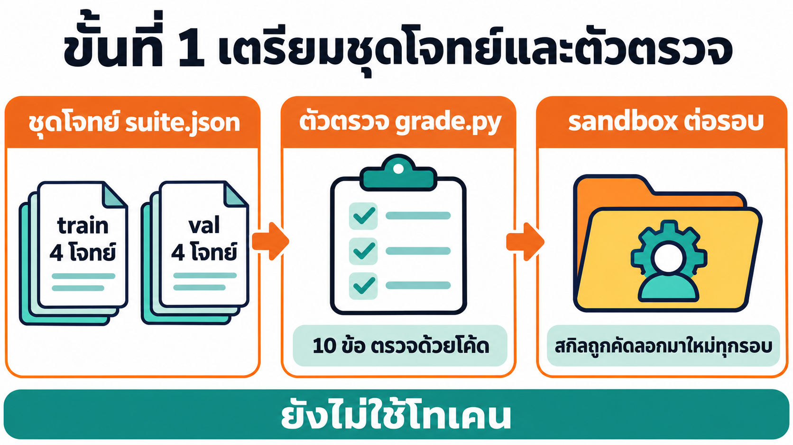
| ชุด | โจทย์ | agent | บัญชี | จุดที่วัด |
|---|---|---|---|---|
| train | t1 จองห้องประชุมห้องสมุด | 4 | Claude 2 · Codex 2 | กรณีปกติ |
| train | t2 เว็บประกาศข่าวโรงเรียน | 2 | Claude 2 | ไม่มีบัญชี Codex |
| train | t3 ระบบสมาชิกฟิตเนส | 3 | Claude 2 · Codex 1 | บล็อกหลายบัญชีไม่เกิน 3 |
| train | t4 สั่งอาหาร food truck | 4 | Claude 2 · Codex 1 | ภาพของรายการต้องรอข้อมูล |
| val | v1 นัดหมายคลินิกสัตว์ | 4 | Claude 2 · Codex 2 | กรณีปกติ |
| val | v2 แจ้งซ่อมหอพัก | 2 | Codex 2 | ไม่มีบัญชี Claude |
| val | v3 ร้านสหกรณ์ชุมชน | 3 | Claude 1 · Codex 2 | ภาพของรายการต้องรอข้อมูล |
| val | v4 แพลตฟอร์มแบบทดสอบ | 4 | Claude 2 · Codex 2 | โควตาต่ำ |
grade.py 10 ข้อ| ข้อตรวจ | ผ่านเมื่อ |
|---|---|
files · dag_valid · block_count | มีไฟล์ครบ · dag ไม่มี ERROR · 8–12 บล็อก |
structure · output_done | บล็อกสุดท้ายเป็น exclusive · ทุกบล็อกมี output และ done |
constraints · all_scheduled | ใช้จำนวน agent และบัญชีตามโจทย์ · ทุกบล็อกมีบัญชีรับ |
selective | บล็อกหลายบัญชีไม่เกิน 1 ใน 3 |
parallel | สายวิกฤตไม่เกิน 60% ของงานรวม |
image_data | บล็อกภาพของรายการรอบล็อกข้อมูล (เฉพาะ t4 และ v3) |
blocks.json แล้วให้สคริปต์ของ v0 วางแผนซ้ำ · คะแนน = ข้อที่ผ่าน ÷ ข้อที่ตรวจเตรียมการทดลอง skill optimization ใน container multi-account ทำผ่าน docker เท่านั้น ห้ามลบ หยุด หรือสร้าง container / volume ห้ามแตะ credential และห้ามล็อกอินแทนผม - คัดลอก ../05_DAG_Planner/base_skills ไปที่ /workspace/05_DAG_Planner/base_skills - คัดลอกโฟลเดอร์ skills part1_dag-planner และ part2_web-builder ของโฟลเดอร์นี้ไปที่ /workspace/07_Skill_Optimization/ (ไม่ต้องคัดลอกโฟลเดอร์ runs) - อ่าน /workspace/07_Skill_Optimization/skills/skill-optimizer/SKILL.md แล้วใช้สกิลนี้ตลอดการทดลอง - สั่ง lint กับสกิล part1_dag-planner/versions/v0 และตรวจว่าบัญชี yolo2 กับ yolo3 พร้อมใช้ - เปิด part1_dag-planner/evals/suite.json แล้วสรุปว่ามีกี่โจทย์ ชุด train และ val อย่างละกี่ข้อ และตัวตรวจ grade.py ตรวจอะไรบ้าง ยังไม่ต้องรันโจทย์ ตอบเป็นตารางสั้น ๆ แล้วหยุด
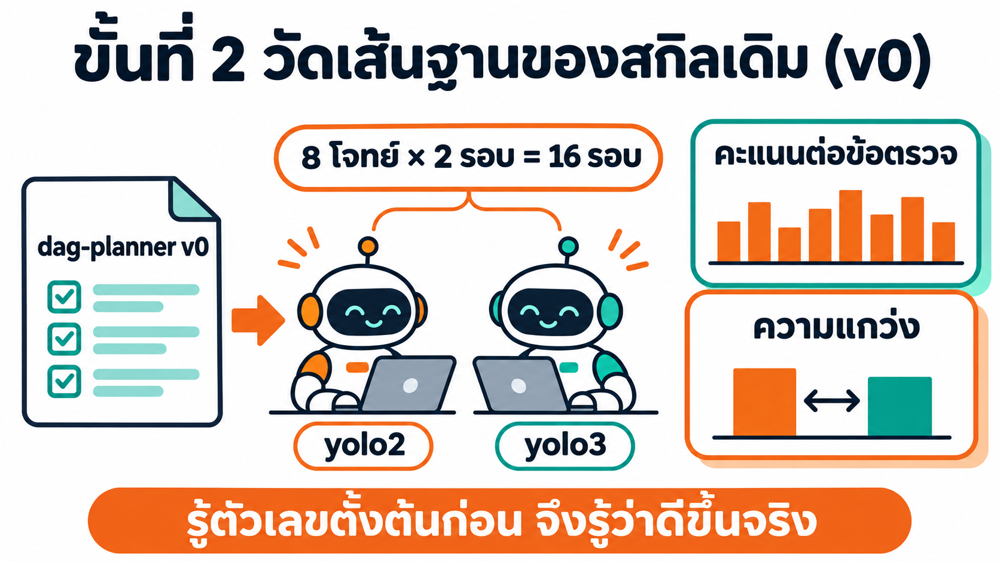
วัดเส้นฐานของสกิล dag-planner รุ่น v0 ด้วยสกิล skill-optimizer ใน container multi-account - ชุดโจทย์ /workspace/07_Skill_Optimization/part1_dag-planner/evals สกิล part1_dag-planner/versions/v0 ตั้งชื่อรุ่นว่า v0 - รันทุกโจทย์ โจทย์ละ 2 รอบ บนบัญชี yolo2 และ yolo3 (16 รอบ ใช้โทเคนจริง) - เสร็จแล้ววัดความแกว่งของ v0 ตอบ: ตารางจาก report · ความแกว่งของค่าเฉลี่ย · ข้อตรวจที่ผ่านไม่ครบ ตัวเลขต้องมาจากคำสั่งของสกิลเท่านั้น
| ชุด | รอบ | คะแนน | ได้เต็มทุกข้อ | คำสั่ง | ค่าใช้จ่าย | parallel | image_data |
|---|---|---|---|---|---|---|---|
| train | 8 | 94.7% | 4/8 | 4.4 | $0.16 | 5/8 | 1/2 |
| val | 8 | 94.7% | 4/8 | 4.2 | $0.15 | 6/8 | 0/2 |
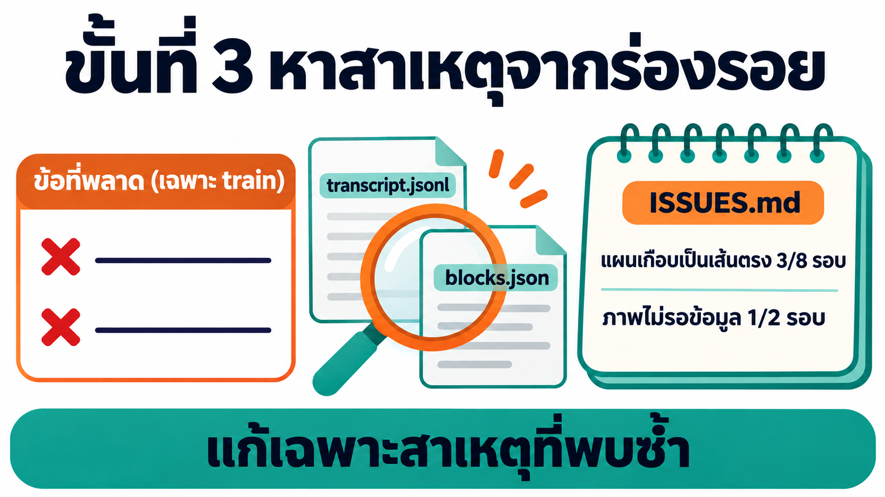
หาสาเหตุของข้อที่ v0 พลาด ด้วยสกิล skill-optimizer (ยังไม่แก้สกิล) - ดูเฉพาะชุด train: สั่ง failures แล้วเปิด transcript.jsonl และ blocks.json ของรอบที่พลาด - เขียนสมุดปัญหาที่ /workspace/07_Skill_Optimization/part1_dag-planner/ISSUES.md ตามรูปแบบของสกิล ตอบ: ตาราง ปัญหา | พบกี่รอบ | สาเหตุ | ทางแก้ที่เสนอ (ไม่เกิน 3 ข้อ)
| ปัญหา | พบ | หลักฐานจากผลงาน | สาเหตุในสกิล |
|---|---|---|---|
| แผนเกือบเป็นเส้นตรง | 3/8 รอบ | t3 รอบ 1: สายวิกฤต 9.6 จากงานรวม 13.8 (70%) | กติกาบอกแค่ "รอเท่าที่จำเป็น" ไม่มีตัวเลขให้ตรวจ และ dag ไม่เตือน |
| ภาพของรายการไม่รอข้อมูล | 1/2 รอบ | t4 รอบ 1: บล็อกรูปอาหาร B03 B04 ไม่มี depends_on | สกิลไม่มีกติกาข้อนี้ (บทเรียนเหมียวช็อปของบท 05) |
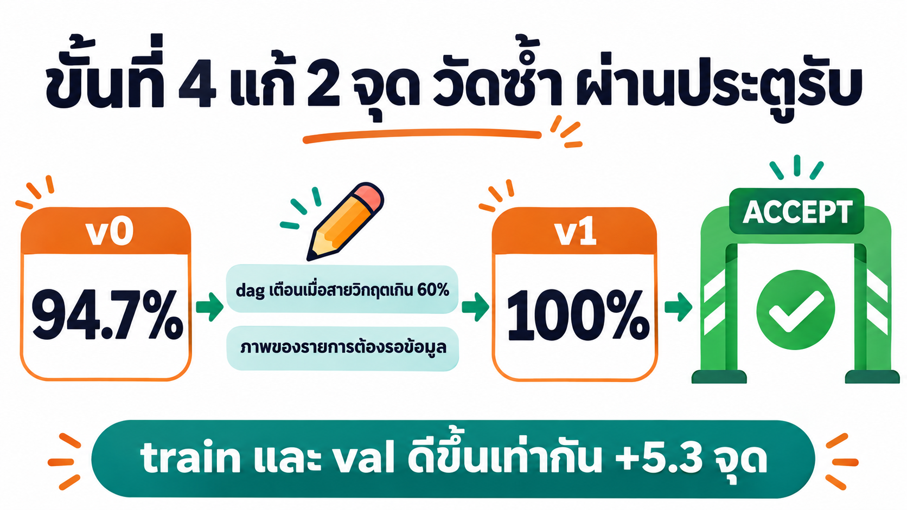
ปรับปรุงสกิล dag-planner จาก v0 เป็น v1 ตามสมุดปัญหา ด้วยสกิล skill-optimizer - คัดลอก versions/v0 เป็น versions/v1 แล้วแก้ไม่เกิน 3 จุด ให้สคริปต์เตือนเองก่อนเพิ่มกติกา ห้ามใส่ชื่อหรือคำตอบของโจทย์ลงในสกิล - รัน v1 ด้วยเงื่อนไขเดียวกับ v0 ทุกค่า (16 รอบ) แล้วสั่ง gate เทียบ v0 กับ v1 - ถ้าข้อตรวจใดของ v1 แย่ลง ให้เปิดผลงานของรอบนั้นดูก่อนว่าเป็นความผิดของสกิลหรือของตัวตรวจ ตอบ: จุดที่แก้ · ตารางเทียบ v0 กับ v1 · ผลประตู แล้วอัปเดต ISSUES.md
dag เตือนเองOK 10 บล็อก · สายวิกฤต B01 → B04 → B05 → B07 → B08 → B10 · ยาว 9.6M tok WARN สายวิกฤต … ยาว 70% ของงานรวม (เกิน 60%) = แผนเกือบเป็นเส้นตรง ทำขนานได้น้อย → ตัด depends_on ที่บล็อกบนสายนี้ไม่ได้อ่านไฟล์ผลจริง หรือแบ่งบล็อก L แล้วสั่ง dag ซ้ำ WARN B02 (image) ไม่รอบล็อกข้อมูลใดเลย: ถ้าเป็นภาพของรายการ (สินค้า · เมนู · ข่าว) ต้อง depends_on บล็อกที่กำหนดรายการนั้น · โลโก้และไอคอนทั่วไปไม่ต้องแก้
WARN เมื่อสายวิกฤตเกิน 60% + ตัวเลข 60% ในกติกา + ขั้นตอนสั่งให้อ่าน WARNWARN เมื่อบล็อก image ไม่รอข้อมูล + กติกา 1 ข้อ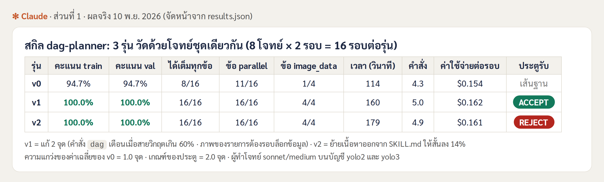
ความแกว่งของ v0 เอง (A/A): ต่อโจทย์ 2.8 จุด · ของค่าเฉลี่ย 1.0 จุด → เกณฑ์ = ค่าที่มากกว่าระหว่างค่านี้กับ eps 2.0
train: 94.7% → 100.0% (+5.3) · ค่าใช้จ่าย $0.16 → $0.16 · คำสั่ง 4.4 → 4.8
val: 94.7% → 100.0% (+5.3) · ค่าใช้จ่าย $0.15 → $0.17 · คำสั่ง 4.2 → 5.2
✓ คะแนนรวมดีขึ้น +5.3 จุด มากกว่าความแกว่ง 2.0 จุด
ผล: ACCEPT ✅ รับ v1 แทน v0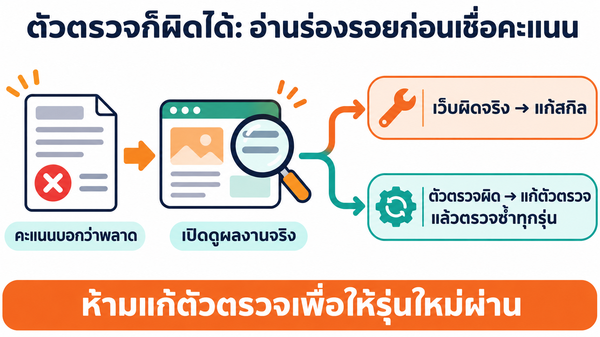
image_data 0/4 แย่กว่า v0| รอบของ v1 | บล็อกภาพในแผน | ตัวตรวจรุ่นแรก |
|---|---|---|
| t4 รอบ 1 | B04 โลโก้ (ไม่รอ) · B05 B06 รูปอาหาร ← B02 ข้อมูลเมนู | ไม่ผ่าน เพราะ B04 |
| t4 รอบ 2 | B03 โลโก้ร้าน (ไม่รอ) · B05 B06 รูปอาหาร ← B02 | ไม่ผ่าน เพราะ B03 |
| v3 รอบ 1 | B03 โลโก้สหกรณ์ (ไม่รอ) · B05 B06 รูปสินค้า ← B02 | ไม่ผ่าน เพราะ B03 |
| v3 รอบ 2 | B06 โลโก้ร้าน (ไม่รอ) · B05 รูปสินค้า ← B02 | ไม่ผ่าน เพราะ B06 |
grade.py แล้วตรวจซ้ำทุกรุ่น: v0 ยังเป็น 1/4 · v1 เป็น 4/4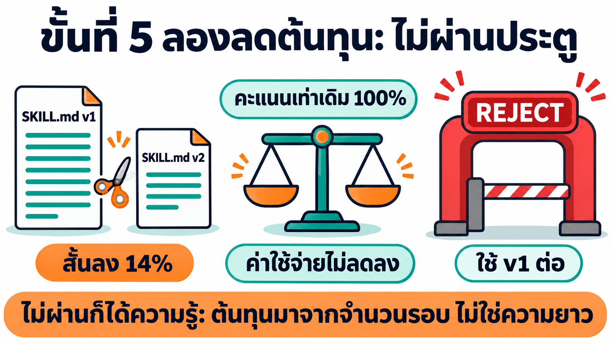
ลองลดต้นทุนของสกิล dag-planner: สร้าง v2 จาก v1 โดยย้ายเนื้อหาที่งานวางแผนไม่ได้ใช้ออกจาก SKILL.md ไปไว้ใน references ห้ามเปลี่ยนกติกา รัน v2 ด้วยเงื่อนไขเดิม (16 รอบ) แล้วสั่ง gate เทียบ v1 กับ v2 ถ้าไม่ผ่านให้ใช้ v1 ต่อ และจดผลลง ISSUES.md ตอบ: ขนาด SKILL.md ก่อนและหลังจาก lint · ตารางเทียบ · ผลประตูพร้อมเหตุผล
| รุ่น | SKILL.md | คะแนน | คำสั่ง | ค่าใช้จ่ายต่อรอบ | output token | ประตู |
|---|---|---|---|---|---|---|
| v1 | 86 บรรทัด · 11,685 ไบต์ | 100% | 5.0 | $0.162 | 4,292 | ใช้ต่อ |
| v2 | 74 บรรทัด · 10,021 ไบต์ | 100% | 4.9 | $0.161 | 4,221 | REJECT |
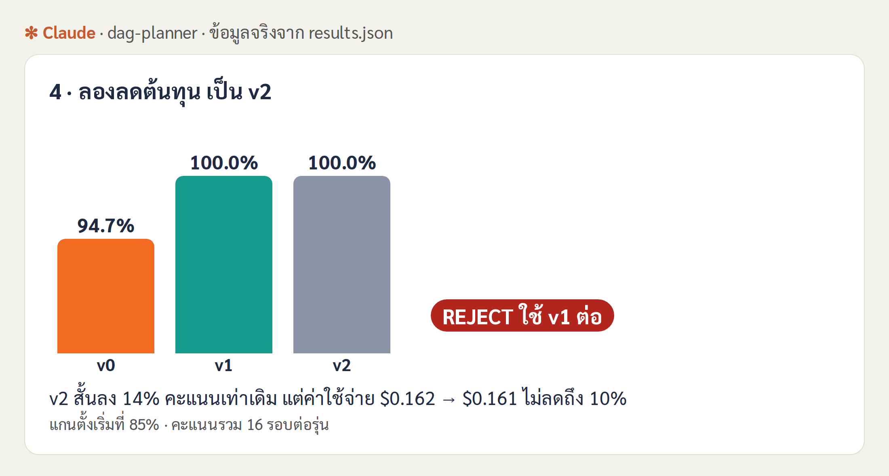
สร้างเว็บจาก brief แล้วตรวจด้วย Playwright · เริ่มจากไม่มีสกิล แล้วปรับด้วยวงรอบเดียวกัน
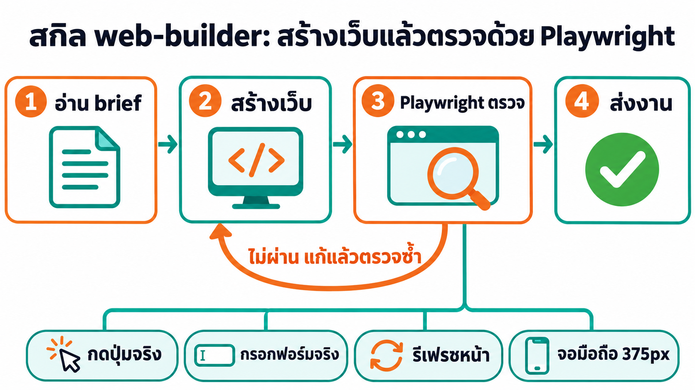
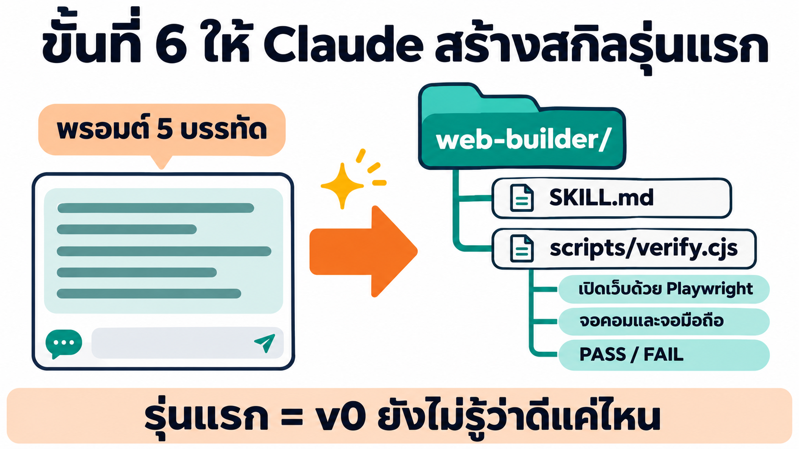
ช่วยสร้างสกิลชื่อ web-builder สำหรับ AI coding agent สกิลนี้ใช้เมื่อผู้ใช้ให้ brief ของเว็บไซต์: เอเจนต์สร้างเว็บ static หน้าเดียวไว้ที่ ./site/index.html (HTML CSS JavaScript ล้วน ไม่มี server ไม่มีขั้น build) แล้วใช้ Playwright เปิดเว็บเพื่อตรวจว่าทำงานจริงก่อนส่งงาน สร้างไว้ที่ ./skills/web-builder (SKILL.md และ scripts ถ้าจำเป็น) สกิลต้องใช้ได้เมื่อถูกคัดลอกไปวางที่โฟลเดอร์ใดก็ได้ เครื่องนี้มี node และมี playwright อยู่ที่ $(npm root -g)/@playwright/mcp/node_modules/playwright (Chromium ติดตั้งแล้ว ต้องเปิดด้วย --no-sandbox) ทดสอบสั้น ๆ ว่าสคริปต์ของสกิลรันได้ แล้วสรุปไฟล์ที่สร้างและหยุด
SKILL.md 75 บรรทัด และ verify.cjs 170 บรรทัดrequire('playwright') ตรง ๆ หาไม่เจอใน container ของวิชานี้ จึงต้องบอกตำแหน่งในพรอมต์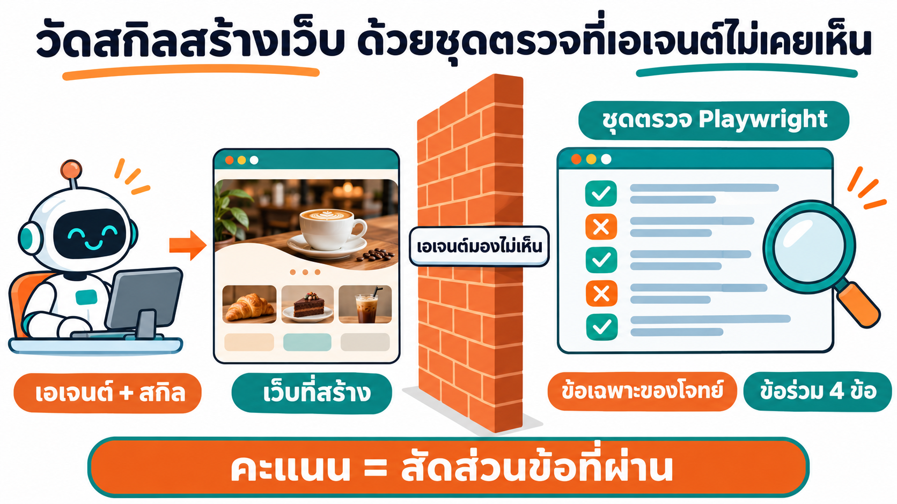
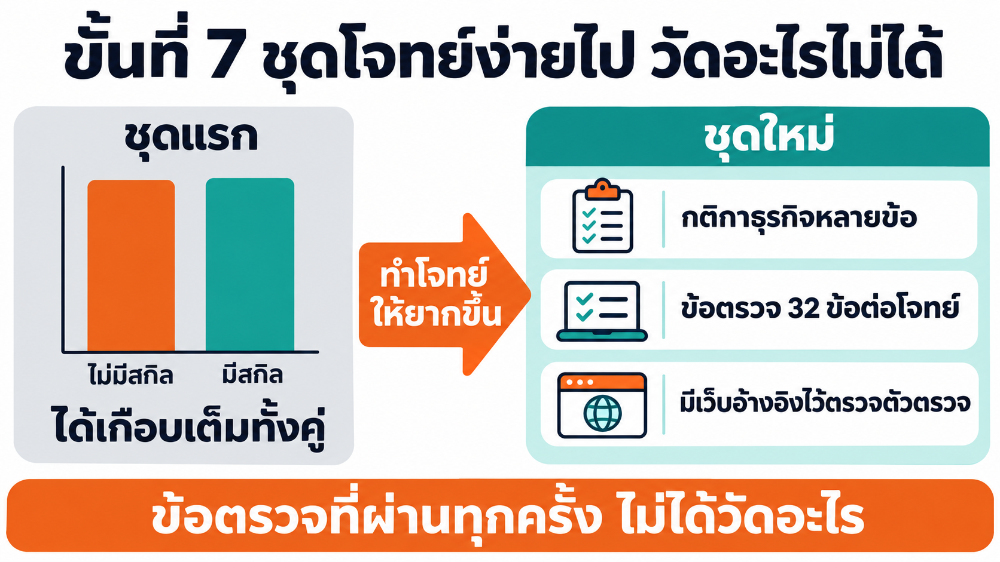
| แขน | รอบ | คะแนน | ได้เต็มทุกข้อ | คำสั่ง | คำสั่งล้ม |
|---|---|---|---|---|---|
| sonnet · ไม่มีสกิล | 12 | 98.5% | 10/12 | 7.7 | 2.0 |
| sonnet · สกิล v0 | 12 | 97.0% | 8/12 | 4.4 | 0.2 |
| haiku · ไม่มีสกิล | 12 | 99.6% | 11/12 | 23.7 | 5.2 |
| ชุด | โจทย์ | กติกาที่ต้องทำให้ถูก |
|---|---|---|
| train | t1 ร้านกาแฟ · t3 ร้านขนมปัง | จำนวนต่อรายการ · โค้ดส่วนลด 2 แบบ · ค่าส่งคิดหลังหักส่วนลด · ปัดครึ่งสตางค์ขึ้น · เลขที่ออเดอร์ · จำค่าหลังรีเฟรช |
| train | t2 ห้องประชุม · t4 สนามแบด | ความจุ · เวลาปิด · เวลาซ้อน (ชนขอบได้) · ราคาวันหยุดและจองยาว · เรียงรายการ · ยกเลิก |
| val | v1 ร้านต้นไม้ · v2 ห้องซ้อมดนตรี | แบบเดียวกัน ตัวเลขชุดใหม่ |
| กลุ่มข้อตรวจ (32 ข้อต่อโจทย์) | ตัวอย่าง |
|---|---|
เฉพาะโจทย์ f_* 17–20 ข้อ | โค้ดลด 15% กับยอด ฿59.50 ต้องลด ฿8.93 |
ความทนทาน g_* | localStorage เสียแล้วยังใช้ได้ · ข้อความยาวไม่ดันจอล้น |
WCAG 2.2 AA a_* | contrast ≥ 4.5:1 · เห็นวงโฟกัส · aria-invalid |
evals/reftype="date" ถูกตัดสินว่าไม่มีวงโฟกัส ทั้ง 3 โจทย์จอง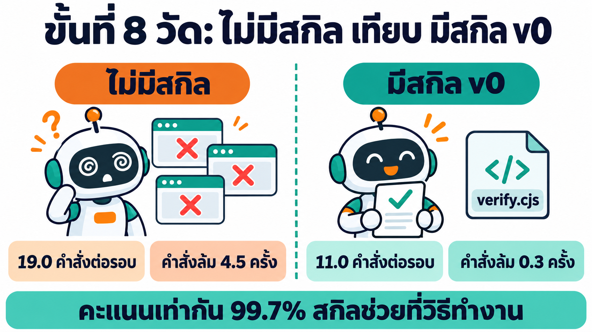
วัดสกิล web-builder รุ่น v0 เทียบกับการไม่ใช้สกิล ด้วยสกิล skill-optimizer ใน container multi-account - ชุดโจทย์ /workspace/07_Skill_Optimization/part2_web-builder/evals สกิล part2_web-builder/versions/v0 - ผู้ทำโจทย์ haiku/low รัน 2 แขน: ไม่มีสกิล (ชื่อรุ่น h-noskill) และมีสกิล (ชื่อรุ่น h-v0) แขนละ 6 โจทย์ × 2 รอบ บนบัญชี yolo2 และ yolo3 (24 รอบ ใช้โทเคนจริง) - เสร็จแล้ววัดความแกว่งของ h-v0 ตอบ: ตารางจาก report · ข้อตรวจที่ผ่านไม่ครบ · จำนวนคำสั่งและคำสั่งล้มของแต่ละแขน
| แขน | คะแนน | คำสั่งต่อรอบ | คำสั่งล้ม | โทเคนขาเข้า | output token | ราคาต่อรอบ |
|---|---|---|---|---|---|---|
| sonnet · ไม่มีสกิล | 100% | 5.0 | 0.8 | 180K | 9.4K | $0.191 |
| sonnet · สกิล v0 | 100% | 4.2 | 0.2 | 167K | 11.4K | $0.230 |
| haiku · ไม่มีสกิล | 99.7% | 19.0 | 4.5 | 773K | 32.1K | $0.033 |
| haiku · สกิล v0 | 99.7% | 11.0 | 0.3 | 548K | 31.4K | $0.031 |
file:// ด้วย Playwright MCP ไม่ได้ 11 ครั้งใน 12 รอบ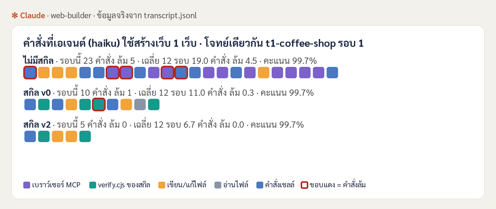
| # | ตัวตรวจตัดสินผิดอย่างไร | พบได้อย่างไร |
|---|---|---|
| G1 | ช่อง type="date" ถูกตัดสินว่าไม่มีวงโฟกัส | เว็บอ้างอิงไม่ผ่าน |
| G2 | เว็บที่ใช้ maxlength ถูกตัดสินว่าเพิ่มข้อความยาวไม่ได้ | เปิดเว็บที่พลาด เห็นว่าจอไม่ล้น |
| G3 | บังคับ aria-describedby ทั้งที่ role="alert" ก็ถูก | อ่านโค้ดของเว็บที่พลาด |
| G4 | บังคับ "ตะกร้า (0)" ทั้งที่ brief ให้แสดง "ตะกร้าว่าง" | กดสั่งซื้อในเว็บที่พลาด |
| G5 | หาช่อง "วันที่" ได้ 2 ชิ้น เว็บที่ใช้งานได้จึงได้ 34% | ข้อความ strict mode violation |
grade ซ้ำทุกแขน: ไม่มีสกิล 100% · สกิล v0 100% · ส่วนต่าง 4.7 จุดเป็นความผิดของตัวตรวจทั้งหมด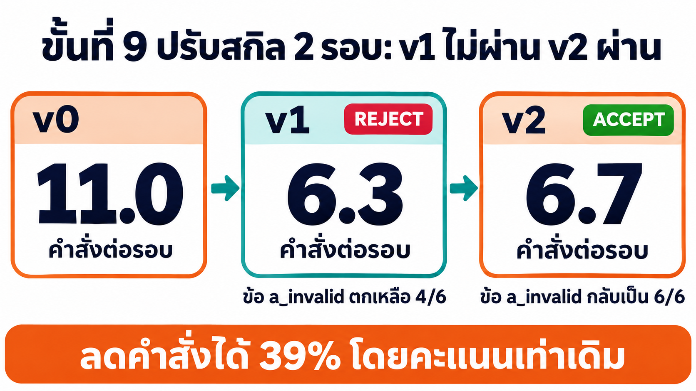
ปรับปรุงสกิล web-builder ด้วยสกิล skill-optimizer ใน container multi-account เป้าหมายคือคะแนนไม่ลดและจำนวนคำสั่งต่อรอบลดลง - หาสาเหตุจากชุด train ของรุ่น h-v0: เอเจนต์ใช้คำสั่งไปกับอะไร และข้อตรวจใดพลาด แล้วเขียน part2_web-builder/ISSUES.md - คัดลอก versions/v0 เป็นรุ่นใหม่ แก้ไม่เกิน 3 จุด ให้สคริปต์ verify.cjs ตรวจและเตือนเองก่อนเพิ่มกติกา - รันรุ่นใหม่ด้วยเงื่อนไขเดียวกับ h-v0 (haiku/low 12 รอบ) แล้วสั่ง gate เทียบกับ h-v0 โดยใช้ --cost-metric tool_calls - ถ้าไม่ผ่าน ให้จดสาเหตุลง ISSUES.md แล้วทำรุ่นถัดไปอีก 1 รอบ ตอบ: จุดที่แก้ของแต่ละรุ่น · ตารางเทียบ · ผลประตูพร้อมเหตุผล
| จุดที่แก้ใน v1 | ส่วนของสกิล |
|---|---|
action ใหม่ reload expectBodyText expectNoBodyText fillLong · รัน steps ทั้ง 2 ขนาดจอ · ตรวจจอล้นหลัง steps · เตือนเมื่อ steps ขาด | verify.cjs |
| ตาราง "ทุกข้อของ brief ต้องมี step" + 4 กรณีที่มักพลาด · คำนวณเงินเป็นสตางค์ | SKILL.md |
| ลบคำสั่งให้ดู screenshot ทุกครั้ง · ห้ามเขียนสคริปต์ Playwright เอง | SKILL.md |
g_longtext 5/6 → 6/6a_invalid ตกจาก 6/6 เหลือ 4/6 และราคาไม่ลด → REJECTaria-invalid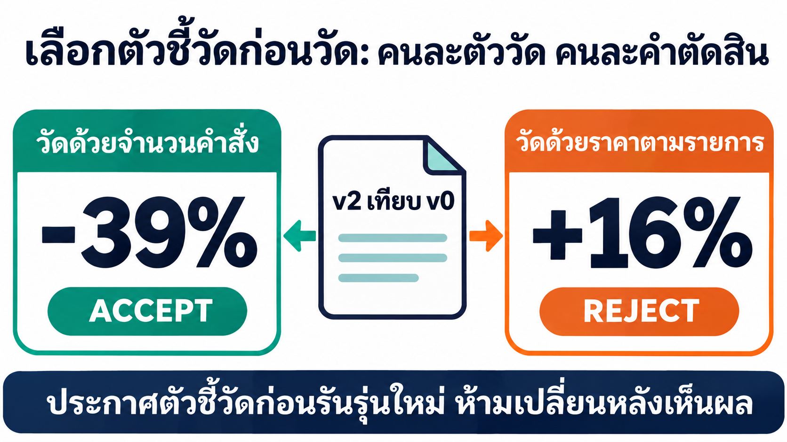
--cost-metric tool_calls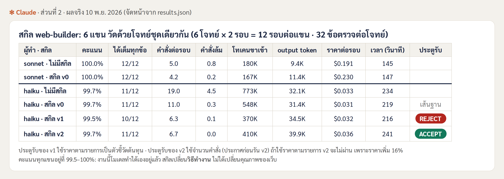
train: 99.6% → 99.6% (+0.0) · ค่าใช้จ่าย $0.03 → $0.04 · คำสั่ง 10.5 → 6.5
val: 100.0% → 100.0% (+0.0) · ค่าใช้จ่าย $0.04 → $0.04 · คำสั่ง 12.0 → 7.0
✓ คะแนนเท่าเดิม (อยู่ในช่วงความแกว่ง) และจำนวนคำสั่งลดลงอย่างน้อย 10% [จำนวนคำสั่ง 11 → 6.667 (-39%)]
ผล: ACCEPT ✅ รับ h-v2 แทน h-v0a_invalid กลับเป็น 6/6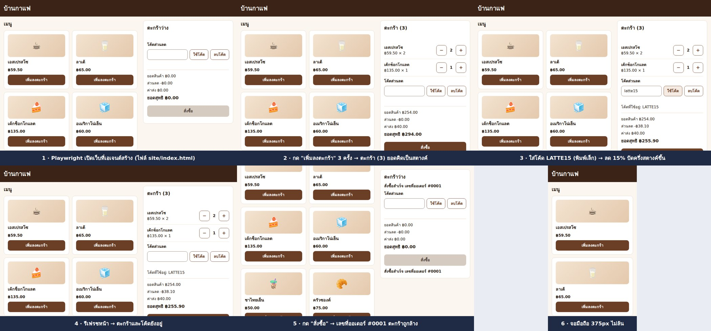
อะไรดีขึ้นจริง อะไรไม่ดีขึ้น และต้องระวังอะไรเมื่อนำไปใช้
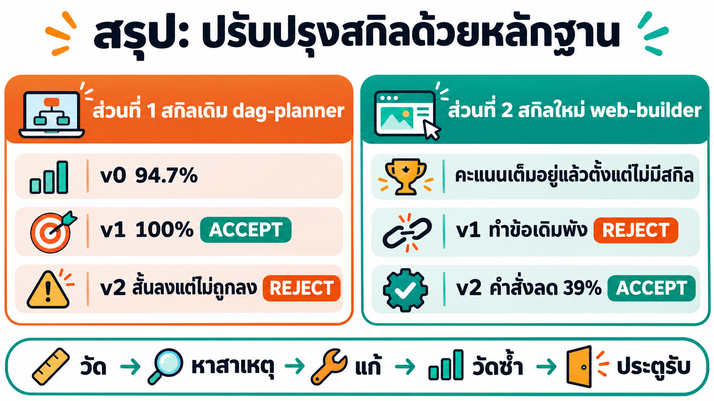
| ส่วนที่ 1 · dag-planner | ส่วนที่ 2 · web-builder | |
|---|---|---|
| เส้นฐาน | v0 94.7% | haiku + v0: 99.7% · 11.0 คำสั่งต่อรอบ |
| สิ่งที่วัดแล้วพบ | 2 จุดอ่อนที่ซ้ำกัน | คุณภาพเต็มอยู่แล้ว ปัญหาอยู่ที่คำสั่งและคำสั่งล้ม |
| รุ่นที่ผ่านประตู | v1: 100% ทั้ง train และ val | v2: คะแนนเท่าเดิม คำสั่ง -39% ไม่มีคำสั่งล้ม |
| รุ่นที่ไม่ผ่าน | v2: สั้นลง 14% ค่าใช้จ่ายไม่ลด | v1: ทำข้อ a_invalid พัง |
| ราคาที่จ่าย | output token +20% | output token +27% · ราคา +16% |
| ตัวตรวจที่ผิด | 1 จุด | 5 จุด |
| รอบที่รัน | 48 | 109 |
| หลัก | เหตุผลจากผลจริงในบทนี้ |
|---|---|
| วัดก่อนแก้ และวัดแขน "ไม่มีสกิล" ด้วย | งานสร้างเว็บได้ 99.7–100% ตั้งแต่ไม่มีสกิล |
| ให้สคริปต์เตือนเอง ดีกว่าเพิ่มกติกา | WARN แก้ข้อที่พลาดได้ทุกข้อที่ลอง |
| แก้ทีละน้อยและวัดครบทุกข้อ | v1 ของ web-builder ลดคำสั่งได้ แต่ทำ a_invalid พัง |
| อ่านผลงานก่อนเชื่อคะแนน | ตัวตรวจผิด 6 จุด ครั้งหนึ่งทำให้สกิลดูแย่กว่าไม่มีสกิล 4.7 จุด |
| เลือกตัวชี้วัดก่อนวัด | v2 ผ่านเมื่อวัดด้วยจำนวนคำสั่ง ไม่ผ่านเมื่อวัดด้วยราคา |
| สกิลสั้นลงไม่ได้แปลว่าถูกลง | สั้นลง 14% ค่าใช้จ่ายลดไม่ถึง 1% |
| ตรวจอะไรใน container | ผลจริง |
|---|---|
บัญชี (team.py check) | yolo1–3 และ cyolo1–2 พร้อม |
| Playwright | Chromium 157 เปิดได้ผ่าน @playwright/mcp/node_modules/playwright |
| ส่วนที่ 1 · ชุด val โจทย์ละ 1 รอบ | v0 97.5% → v1 100% · ทั้งสองรุ่น 38 วินาทีต่อรอบ |
| ส่วนที่ 2 · ชุด val โจทย์ละ 1 รอบ (haiku) | ไม่มีสกิล 21.0 คำสั่ง ล้ม 4.0 → สกิล v2 10.0 คำสั่ง ล้ม 0.0 |
yoloN ได้โดยตรง · คะแนนแขนละ 2 รอบใน container ยังบอกอะไรไม่ได้บทนี้รัน 157 รอบ เริ่มจาก --split train --reps 1 ก่อน
แขนละ 12–16 รอบ ส่วนต่าง 0.2 จุดยังอยู่ในความแกว่ง เชื่อได้เฉพาะส่วนต่างที่ใหญ่
สกิล v0 ทำให้ sonnet แพงขึ้น 21% แต่ช่วย haiku ต้องวัดกับรุ่นที่จะใช้จริง
ขึ้นกับงานที่รันพร้อมกันบนเครื่อง ให้ดูจำนวนคำสั่งและโทเคน
ส่วนที่ 2 มีโจทย์ val แค่ 2 ข้อ
พรอมต์ของบทนี้บอกให้อ่านสกิลใน ./skills เสมอ
O=skills/skill-optimizer/scripts/skillopt.py python3 $O lint part1_dag-planner/versions/v0 python3 $O run part1_dag-planner/evals --skill part1_dag-planner/versions/v0 --label v0 --reps 2 --accounts yolo2,yolo3 python3 $O null part1_dag-planner/evals --label v0 python3 $O failures part1_dag-planner/evals --label v0 --split train python3 $O report part1_dag-planner/evals --labels v0,v1 python3 $O gate part1_dag-planner/evals --base v0 --cand v1 # ส่วนที่ 2 (ผู้ทำ haiku/low) python3 $O run part2_web-builder/evals --skill none --label h-noskill --reps 2 --model haiku --effort low python3 $O gate part2_web-builder/evals --base h-v0 --cand h-v2 --cost-metric tool_calls
/workspace/07_Skill_Optimization · run ใช้โทเคน คำสั่งอื่นไม่ใช้